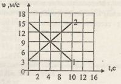

21. Уравнения перемещения двух тел, заданные графиками
1 и 2,

А) $s_1 = 15t - 0,6t^2, s_2 = 3t + 0,6t^2$
В) $s_1 = 3t - 1,2t^2, s_2 = 15t + 1,2t^2$
С) $s_1 = 15t + 1,2t^2, s_2 = 3t - 1,2t^2$
О) $s_1 = 15t — 1,2t^2, s_2 = 3 + 1,2t^2$
Е) $s_1 = 18t — 1,2t^2, s_2 = 18t + 1,2t^2$